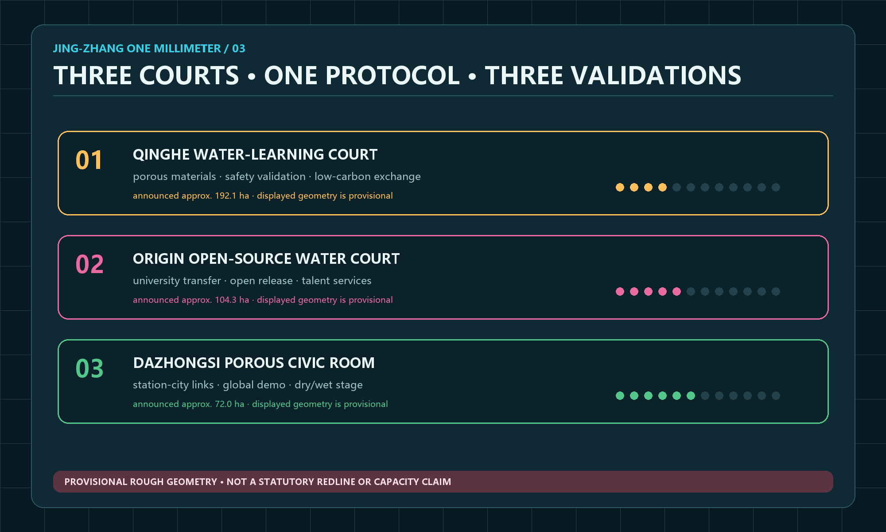

1porous heritage spine
3water-learning courts
2innovation-life wings
12lightweight rain stations
Five evidence figures

Complete conceptual partition

Three key water-learning courts

Three-state public space

Metric evidence states
Twelve AI+ scenarios
- 01 · rain bulletin
- 02 · porous-material test
- 03 · tree-pit care
- 04 · accessible reporting
- 05 · rain-sound guide
- 06 · robot stop rule
- 07 · event risk
- 08 · open-test credential
- 09 · community review
- 10 · open-source festival
- 11 · post-rain work order
- 12 · comfort route
Review navigation
overview mapthree-level scopekey areasland-use zonestransport and slow mobilityblue-green public spacebuildingsrenewal projectsAI scenarioscore metricstask coverageself-check statussourcesassumptions
11.413 km²*provisional geometry calculation
18.3%*concept green-space ratio
11.7%*concept public-space ratio